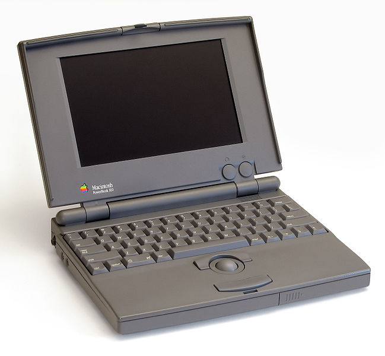

The PowerBooks

IDG/Danamania(CC BY-SA 3.0)
- When people think of Mac, most people think of the Macbook, but the laptop versions of the Macintosh
did not start with the MacBook. Instead, they started with the Macintosh Portable. The Macintosh
Portable was not very successful though, so Apple bounced back with a series of laptops that Apple
named the PowerBook. The first PowerBook released by Apple was the PowerBook
100, which was released in 1991. The PowerBook 100 retailed for $2,500 and boasted a
great set of features. The PowerBook 100 had a set-back keyboard, a palm rest, and instead of
the trackpad that we are all used to using, it featured a trackball. The PowerBook 100 was a
huge success for Apple, leading them to create more models of it. The PowerBook 500 released
in 1994 and retailed for $2,270. It featured a 9.5 inch screen, a small upgrade from the
PowerBook 100's 9 inch screen, built-in Ethernet, stereo speakers, and it replaced the
trackball with the trackpad that we know today. The next installment in the PowerBook line
was the PowerBook G3. The PowerBook G3 featured a massive increase in screen size,
going from 9.5 inches to 14.1 inches. Retailing for $1,999, it also featured CD-ROM and DVD-ROM
drives. The PowerBook Titanium G4 released in 2001 for $2,599. This version of the
Powerbook is visually the most similar to the MacBooks we know today. The G4 in it's name
comes from the PowerPC G4 Processor that the laptop comes with, and the titanium in the name comes
from the laptop's titanium metal body. This PowerBook features a screen size increase from
14.1 inches to 15.2 inches.